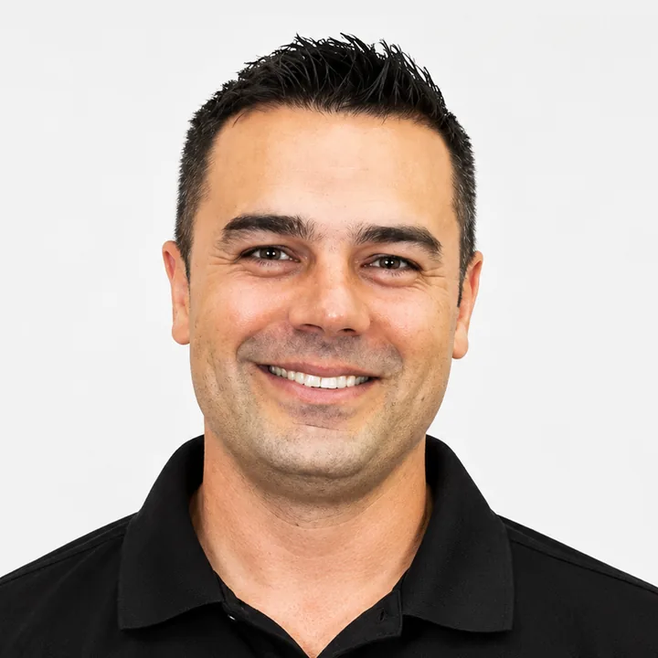

Jade Warren
Clinical Director & Founder · 26+ Years
Jade founded Total Body Physio in 2000 with a simple belief — people deserve better than cookie-cutter treatment. With over 26 years of experience, he still sees patients most days at Titirangi, working with everyone from elite athletes to people managing chronic pain. Married with four teenage children, Jade is a passionate advocate for hands-on physio and keeping people moving at every age.
Shoulder rehabilitationKnee rehabilitationSports injuriesACC claims
Book with Jade →